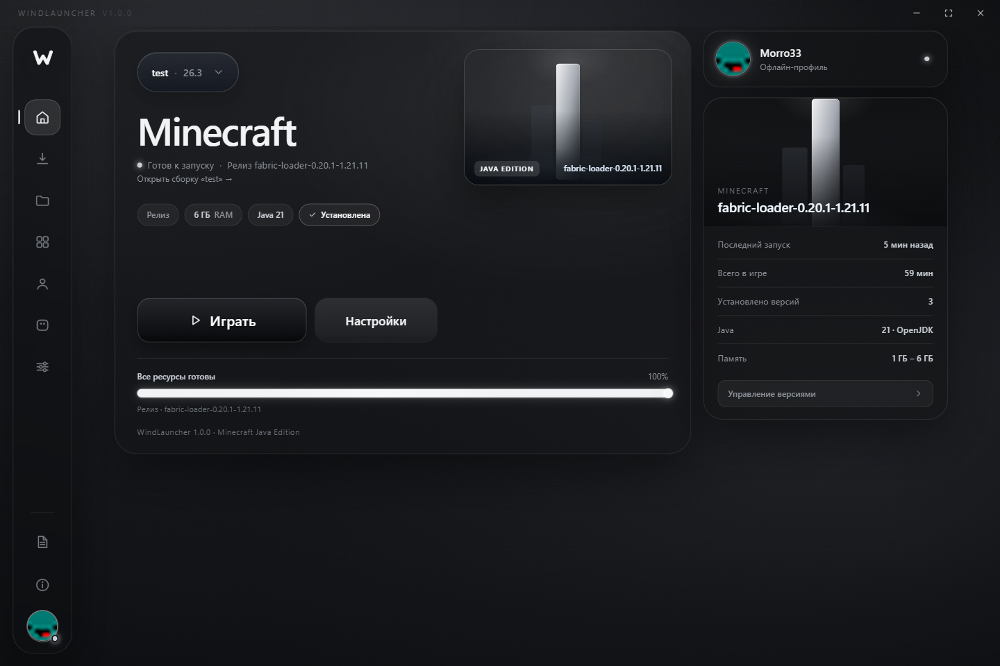
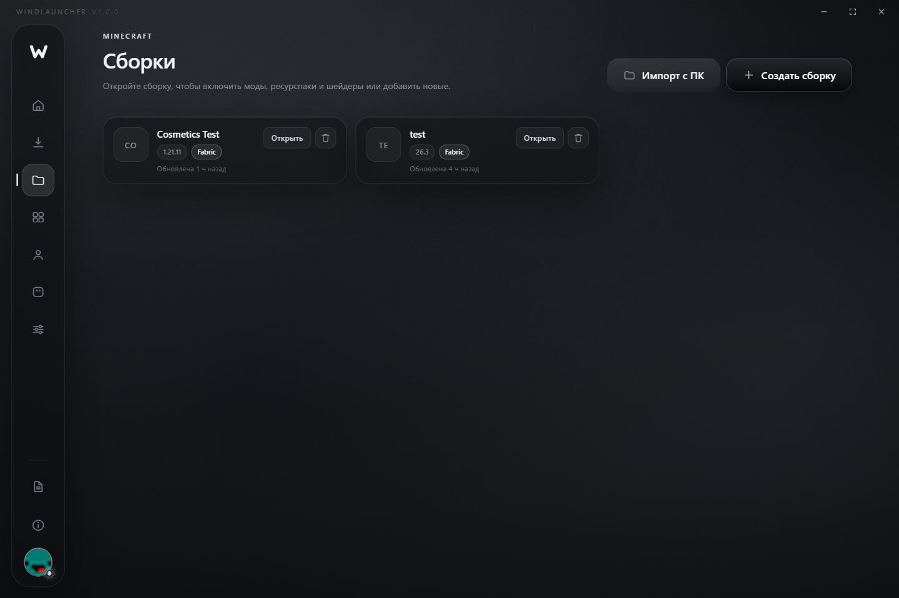
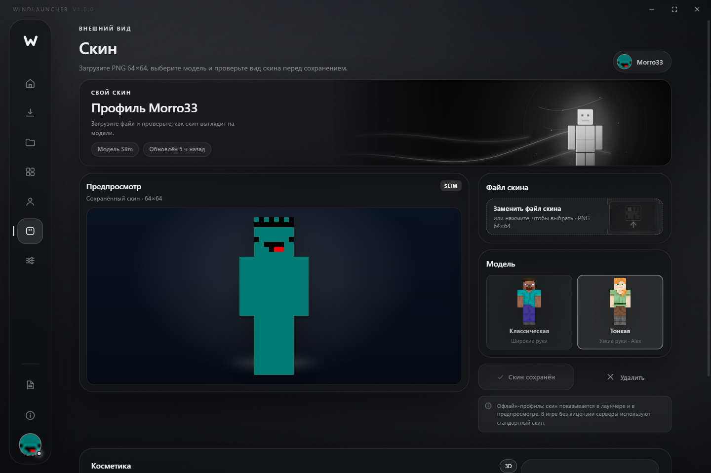

Сборки под контролем
Создавайте профили под разные версии и загрузчики, импортируйте готовые сборки и держите порядок в файлах.
Сборки, моды, ресурспаки, шейдеры и пиксельная 3D-косметика — в одном лёгком лаунчере. Без лишнего шума, с чистой типографикой и запуском в один клик.

Создавайте профили под разные версии и загрузчики, импортируйте готовые сборки и держите порядок в файлах.
Каталог Modrinth и CurseForge с фильтрами по версии и загрузчику. Установка сразу в выбранную сборку.
Подключайте шейдерпаки в один клик и переключайте их прямо из лаунчера — без ручной возни с папками.
Пиксельные шапки и крылья с анимацией. Видны только вам и двигаются вместе с персонажем.
Свой установщик Fabric, проверка Java и библиотек, аккуратный вывод игры в лог лаунчера.
Монохромная тема, мягкие тени, плавные переходы. Ничего не отвлекает от игры.


Один файл, без установщика. Запустите WindLauncher.exe, добавьте
аккаунт — и играйте. Для сборок с Fabric нужна Java 21, лаунчер подскажет.
b18014d7c798dcf9874a1dce5be4fa5b1b684ea660348ba55501101fb2647544
Файл лежит в релизе на GitHub. Если браузер предупредит о загрузке — это нормально для неподписанных exe.
Файл ~95 МБ, Windows 10/11 x64.
Установка не нужна — portable.
Microsoft или офлайн-профиль.
Выберите сборку и нажмите «Играть».
Пока отзывов нет — станьте первым.
Можно войти через Microsoft или создать офлайн-профиль. Для игры на серверах с лицензией нужен Microsoft-аккаунт.
Лаунчер ставит vanilla-версии и Fabric-профили. Для сборок с модами нужен загрузчик Fabric — он устанавливается автоматически.
В папку выбранной сборки. Контент из каталога устанавливается сразу туда, а игра запускается с этой папкой — поэтому всё видно в Minecraft.
Файл собирается локально из исходников проекта. Сверху на странице есть SHA-256 — можно сверить после скачивания.